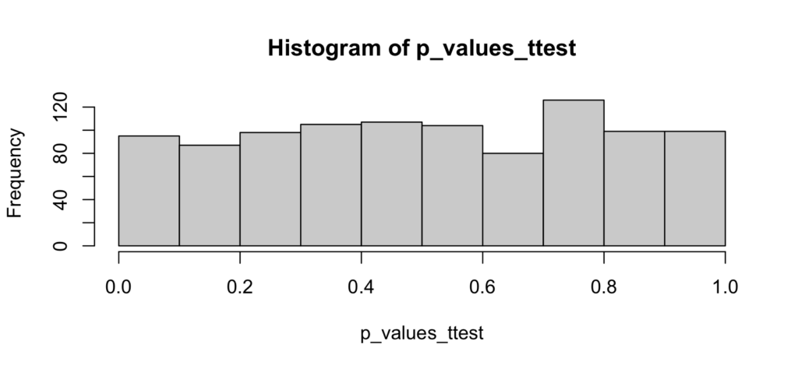
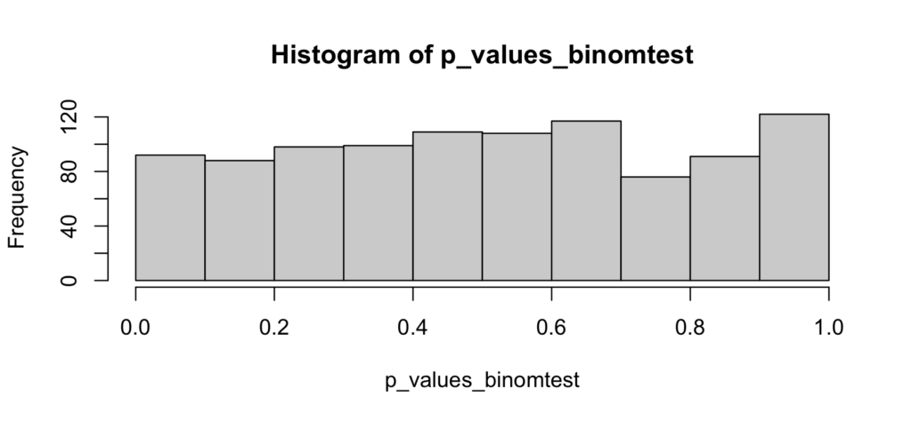

I sometimes use this fun interview question for aspiring data scientists:
How are p-values distributed assuming the null hypothesis is true?

I’ve heard a lot of reasonable answers, including:
It should be centered towards large values
it should have almost zero mass below 0.05
It depends on the model
It depends on the null hypothesis
All very reasonable and intuitive answers which I would probably, at some point, have given myself. They’re also all wrong.
The (perhaps surprising) answer is that under any null hypothesis, the p-values are uniformly distributed: all p-values between 0 and 1 are equally likely.
Before we give a formal proof, here’s some intuition. For any significance level \(\\alpha\), how often will a statistical test under the null yield a significant result? Of course \(\\alpha\), by the definition of the significance level. But for a test to be significant at \(\\alpha\), it must be true that the p-value \(p < \\alpha\). So we’re saying that \(p < \\alpha\) with probability \(\\alpha\). Or \(Pr(p < \\alpha) = \\alpha\), which is the definition of a uniform distribution.
More formally, when we perform a statistical test, we calculate some statistic \(\\hat{S}\) from the data. Under the null, this statistic follows some distribution \(S\). The statistic \(\\hat{S}\) is associated with a p-value \(\\hat{p}\), which by definition is the probability that the test statistic is at least as extreme as \(\\hat{S}\): \(\\hat{p} = Pr(S > \\hat{S})\). But note also that for the p-value to be smaller than \(\\hat{p}\) would require that the test statistic be larger than \(\\hat{S}\), so \(Pr(p < \\hat{p}) = Pr(S > \\hat{S})\), which we just said is equal to \(\\hat{p}\). So \(Pr(p < \\hat{p}) = \\hat{p}\), which is again the definition of a uniform distribution.
Notice that nowhere did I have to assume anything about \(S\), the distribution of the test statistic. This result holds no matter what test statistic we do. Let’s see this in action for two common statistical tests.
The t-test
The t-test tests for the equality of means between two samples. The null hypothesis states that both samples are drawn from the same (normal) distribution. So, to see how the p-value is distributed, we’ll draw two equal-sized samples from the same distribution, compute the p-value from the t-test, and repeat:
one_ttest <- function() {
x <- rnorm(100)
y <- rnorm(100)
test <- t.test(x, y)
test$p.value
}
p_values_ttest <- replicate(1000, one_ttest())
hist(p_values_ttest)
As expected, the p-values are uniformly distributed from 0 to 1. There is no evidence of any accumulation of mass towards higher values, nor is there any evidence that p-values smaller than 0.05 are less likely.
The binomial test
The binomial test tests whether an empirical proportion is different than a hypothesized proportion \(p\). The null hypothesis states that the sample is drawn from a population where the condition of interest happens with probability \(p\). So we’ll follow the same method as above:
one_binomtest <- function() {
prob <- 0.2
successes <- rbinom(1, 1000, prob)
test <- binom.test(successes, 1000, p = prob)
test$p.value
}
p_values_binomtest <- replicate(1000, one_binomtest())
hist(p_values_binomtest)
As above, there’s no reason to suspect that the p-values are anything else than uniformly distributed
Conclusion
In the t-test or the binomial test we didn’t have to specify any significance level, we just looked at the distribution of a p-value assuming the null hypothesis to be true. We found that, as predicted by theory, the p-values are uniformly distributed between 0 and 1, and that therefore the probability of rejecting the null at a significance level \(\\alpha\) is precisely \(\\alpha\). All p-values between 0 and 1 are equally likely, no matter what statistical test you use (with some exceptions, such as a discrete test distribution).
Addendum
I’ve posted a short YouTube video illustrating these examples.